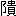

橘南谿が
東遊記に、
陸前国苅田郡高福寺なる
甲胄堂の
婦人像を
記せるあり。
奥州白石の城下より一里半南に、才川と云ふ駅あり。此の才川の町末に、高福寺といふ寺あり。奥州筋近来の凶作に此寺も大破に及び、住持となりても食物乏しければ僧も不住、明寺となり、本尊だに何方へ取納しにや寺には見えず、庭は草深く、誠に狐梟のすみかといふも余あり。此の寺中に又一ツの小堂あり。俗に甲胄堂といふ。堂の書附には故将堂とあり、大さ纔に二間四方許の小堂なり、本尊だに右の如くなれば、此小堂の破損はいふ迄もなし、やう／＼に縁にあがり見るに、内に仏とてもなく、唯婦人の甲胄して長刀を持ちたる木像二つを安置せり。これ、佐藤次信忠信兄弟の妻、二人都にて討死せしのち、其の母の泣悲しむがいとしさに、我が夫の姿をまなび、老ひたる人を慰めたる、優しき心をあはれがりて時の人木像に彫みしものなりといふ。此の物語を聞き、此像を拝するにそゞろに落涙せり。（略）かく荒れ果てたる小堂の雨風をだに防ぎかねて、彩色も云々。
甲胄堂の
婦人像のあはれに
絵の
具のあせたるが、
遥けき
大空の
雲に
映りて、
虹より
鮮明に、
優しく
読むものゝ
目に
映りて、
其の
人恰も
活けるが
如し。われら
此の
烈しき
大都会の
色彩を
視むるもの、
奥州辺の
物語を
読み、
其の
地の
婦人を
想像するに、
大方は
安達ヶ
原の
婆々を
想ひ、もつぺ
穿きたる
姉をおもひ、
紺の
褌の
媽々をおもふ。
同じ
白石の
在所うまれなる、
宮城野と
云ひ
信夫と
云ふを、
芝居にて
見たるさへ
何とやらむ
初鰹の
頃は
嬉しからず。たゞ
南谿が
記したる
姉妹の
此の
木像のみ、
外ヶ
浜の
砂漠の
中にも
緑水のあたり
花菖蒲、
色のしたゝるを
覚ゆる
事、
巴、
山吹の
其にも
優れり。
幼き
頃より
今も
亦然り。
元禄の
頃の
陸奥千鳥には――
木川村入口に
鐙摺の
岩あり、
一騎立の
細道なり、
少し
行きて
右の
方に
寺あり、
小高き
所、
堂一宇、
次信、
忠信の
両妻、
軍立の
姿にて
相双び
立つ。
軍めく二人の嫁や花あやめ。
また、
安永中の
続奥の
細道には、――
故将堂女体、
甲胄を
帯したる
姿、いと
珍らし、
古き
像にて、
彩色の
剥げて、
下地なる
胡粉の
白く
見えたるは。
卯の花や威し毛ゆらり女武者。
としるせりとぞ。
此の
両様とも
悉しく
其の
姿を
記さゞれども、
一読の
際、われらが
目には、
東遊記に
写したると
同じ
状に
見えて
最と
床し。
然るに、
観聞志と
云へる
書には、
斉川以西有羊腸、
維石厳々、
嚼足、
毀蹄、
一高坂也、
是以馬憂※［＃「虫＋亢」、U+86A2、378-11］、
人痛嶮艱、
王勃所謂、
関山難踰者、
方是乎可信依、
土人称破鐙坂、
破鐙坂東有一堂、
中置二女影、
身着戎衣服、
頭戴烏帽子、
右方執弓矢、
左方撫刀剣とありとか。
此の
女像にして、もし、
弓矢を
取り、
刀剣を
撫すとせむか、いや、
腰を
踏張り、
片膝押はだけて
身搆へて
居るやうにて
姿甚だとゝのはず、
此の
方が
真ならば、
床しさは
半ば
失せ
去る。
読む
人々も、
恁くては
筋骨の
逞しく、
膝節手ふしもふしくれ
立ちたる、がんまの
娘を
想像せずや。
知らず、
此の
方は
或は
画像などにて、
南谿が
目のあたり
見て
写し
置ける
木像とは
違へるならむか。
其の
長刀持ちたるが
姿なるなり。
東遊記なるは
相違あらじ。またあらざらむ
事を、われらは
願ふ。
観聞志もし
過ちたらむには
不都合なり、
王勃が
謂ふ
所などは
何うでもよし、
心すべき
事ならずや。
近頃心して
人に
問ふ、
甲胄堂の
花あやめ、あはれに、
今も
咲けりとぞ。
唐土の
昔、
咸寧の
時、
韓伯が
子某と、
王蘊が
子某と、
劉耽が
子某と、いづれ
華冑の
公子等、
一日相携へて
行きて、
土地の
神、
蒋山の
廟に
遊ぶ、
廟中数婦人の
像あり、
白皙にして
甚だ
端正。
三人此の
処に、
割籠を
開きて、
且つ
飲み
且つ
大に
食ふ。
其の
人も
無げなる
事、
恰も
妓を
傍にしたるが
如し。
剰へ
酔に
乗じて、
三人おの／＼、
其の
中三婦人の
像を
指し、
勝手に
撰取りに、おのれに
配して、
胸を
撫で、
腕を
圧し、
耳を
引く。
時に、
其の
夜の
事なりけり。
三人同じく
夢む、
夢に
蒋侯、
其の
伝教を
遣はして
使者の
趣を
白さす。
曰く、
不束なる
女ども、
猥に
卿等の
栄顧を
被る、
真に
不思議なる
御縁の
段、
祝着に
存ずるもの
也。
就ては、
某の
日、
恰も
黄道吉辰なれば、
揃つて
方々を
婿君にお
迎へ
申すと
云ふ。
汗冷たくして
独りづゝ
夢さむ。
明くるを
待ちて、
相見て
口を
合はするに、
三人符を
同じうして
聊も
異なる
事なし。
於是蒼くなりて
大に
懼れ、
斉しく
牲を
備へて、
廟に
詣つて、
罪を
謝し、
哀を
乞ふ。
其の
夜又倶に
夢む。
此の
度や
蒋侯神、
白銀の
甲胄し、
雪の
如き
白馬に
跨り、
白羽の
矢を
負ひて
親く
自から
枕に
降る。
白き
鞭を
以て
示して
曰く、
変更の
議罷成らぬ、
御身等、
我が
処女を
何と
思ふ、
海老茶ではないのだと。
木像、
神あるなり。
神なけれども
霊あつて
来り
憑る。
山深く、
里幽に、
堂宇廃頽して、
愈活けるが
如く
然る
也。